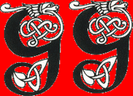

Forums galactiques > Assemblée Galactique : diplomatie officielle > Etat de la galaxie
Pages : 1 2
primarque 15/08 ETU 15:24 | Le généralissime se leva, au milieu d'une assemblée quasiment vide, une expression triste sur le visage. "Commandeurs, Je suis atristé de la situation actuelle de la galaxie, de moins en moins de commandeurs s'occupent de leur empire, l'assemblée est presque vide, et le peu de gens qui la fréquentent ont perdu la notion de ce qui doit être dit en ces lieux. Les commercants y font étalage de leurs marchandises, au lieu de le faire à la taverne, et ici ne sont échangé priincipalement que des insultes et des propos insipides.... Certains se mettent meme à parler agriculture en ces lieux de politiques ( culture des abricots, sic....). Je vous demande ici à tous de fréquenter plus assidument ce lieu et plus raisonablement, la taverne est faite pour toutes les choses non officielles, alors je vous demande à tous de faire attention, je vous prie. Je souhaite la bienvenue à tous les jeuens commandeurs, qui n'ont jamais connu l'assemblée autrement que dans sa décadence, et je leur demande à eux aussi de faire changer ses choses, et de participer aux débats. Merci aux rares d'entre vous ici présent de m'avoir écouté." Le généralissime retourna s'assoir... |
yable 15/08 ETU 15:35 | Il est vrai que les affaires officielles ont dégénérées en règlements de compte et en proposition de marchandises. J'ai moi même participé à cette tendance, et je m'en excuse. Je souhaite à cette assemblée de retrouver sa grandeur (même si je ne l'ai moi même pas connue). |
L'Atlante 15/08 ETU 15:55 | Je suis entièrement d'accord avec vous commandant primarque, c'est devenu un grand n'importe quoi ces derniers temps. HRP : pour les nouveaux, regarder les premières pages de l'assemblée, c'était le bon temps .... :/HRP |
etic 15/08 ETU 16:03 | En esperant que celui revienne, il nous rest 15jours pour y remédier... Etic |
primarque15/08 ETU 16:18 | Au rebbot, je tient à ce que les anciens, qui ont connu l'apogée de l'assemblée, se battent par la force si il le faut pour son intégrité |
karctak 15/08 ETU 16:28 | Je serai ravi d'y participer , si je peux etre considéré comme un ancien bien entendu... |
yable15/08 ETU 16:30 | Moi je suis un petit nouveau, mais j'ai bien l'intention de me battre aussi pour que l'assemblée reste digne d'elle même |
L'Atlante15/08 ETU 16:32 | Je participerai à cela, vous pouvez en être sûr, même si le nombre de mes interventions sur l'assemblée est faible. Autre question, quels sont les commandants que l'ont peu qualifié d'anciens ? Pour ma part je pense être parmi les plus vieux ici même |
primarque15/08 ETU 16:33 | Moi de meme l'atlante |
etic15/08 ETU 17:00 | j'espere l'être aussi même si je suis plus jeune que mes deux prédecesseur ci dessus. |
primarque15/08 ETU 17:53 | on va dire ke sont ancien tous ceux ki sont apparu dans les 35 premiers systémes. Je suis apparu systéme 8. |
etic15/08 ETU 17:54 | Donc, je ne suis pas un ancien...... |
primarque15/08 ETU 18:14 | tant pis, tu est un puissant actuel quand même |
Justicar 15/08 ETU 18:22 | moi, je suis un ancien, j'espère, p'être meme l'un des plus vieux, plus vieux encore que ceux du système 1, car j'ai joué sur l'Alphatest... et oui. Mais bon, je ne suis pas encore sur de reprendre après le reboot, mais si je reviens, je participerai a la résurection de l'AG, soyez en sure |
| gégé  15/08 ETU 18:34 | Je m'engage solennellement à participer au renouveau de cette assemblée. Mes résolutions prennent effet immédiatement |
etic15/08 ETU 18:50 | Merci bien, je ferai mon possible pour cela |
rambo 15/08 ETU 18:52 | je rentre tout juste de vacance, il ne me reste plus qu'une planète, je n'ai plus rien, je crois que je vais en rester là car je n'ai pas trop envie de me refaire même si j'en aurais les moyens... Toutefois mon compte restera actif pour me tenir informé et je vous dit a bientôt pour la new version ;-) |
rambo15/08 ETU 18:53 | ah oui il ne me reste qu'une p^lanète car j'ai mal calculé et mon départ en vacance et mon retour |
Kyo 15/08 ETU 19:28 | hmm moi j'avai commencé sur le systeme 18 mais apres avoir été totalement détruit j'ai recommencé dans le 32 :) |
gégé15/08 ETU 19:28 | Si les vieux commandants sont ceux des 35 premiers systèmes, alors j'en suis un de justesse car je suis issu du système 35 |
Pages : 1 2
Forums galactiques > Assemblée Galactique : diplomatie officielle > Etat de la galaxie